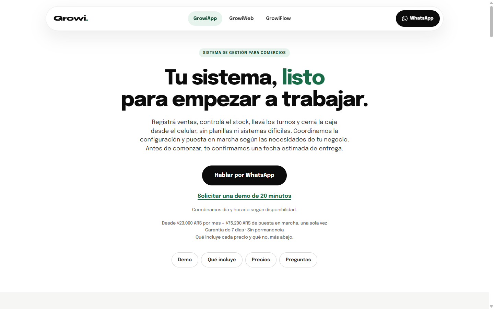
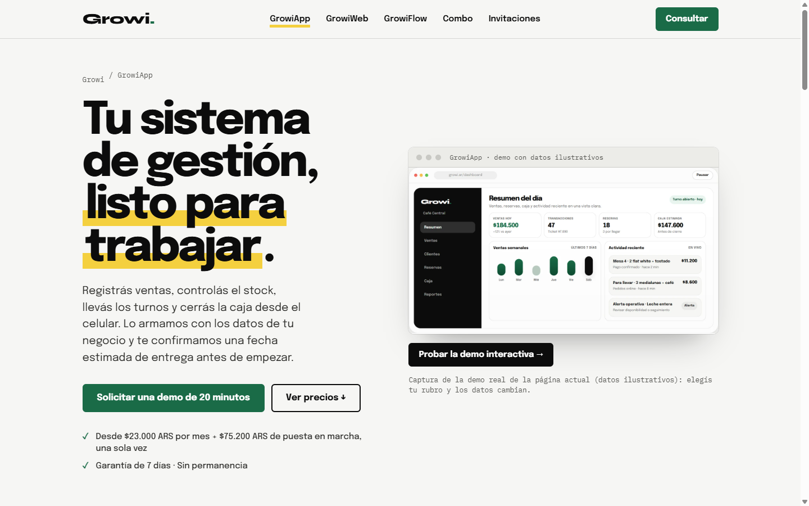
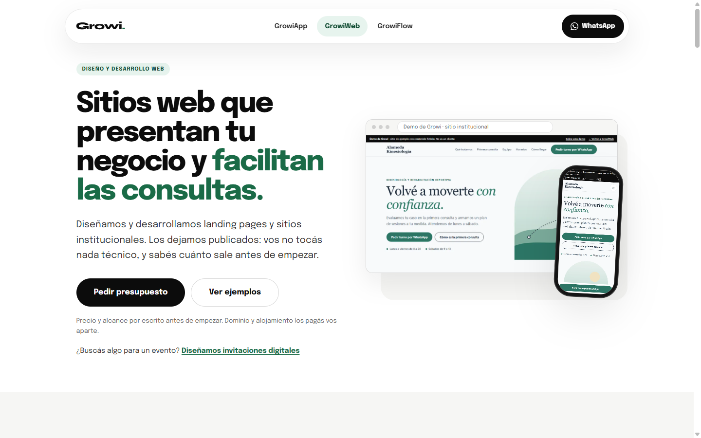
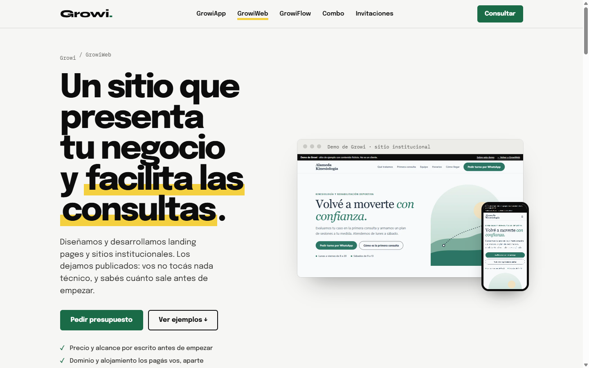
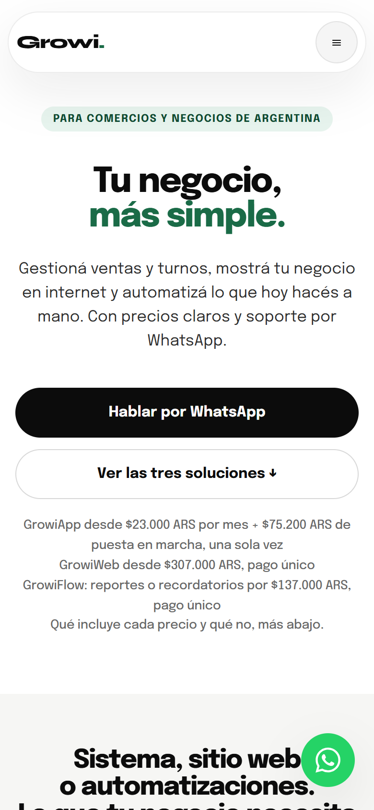
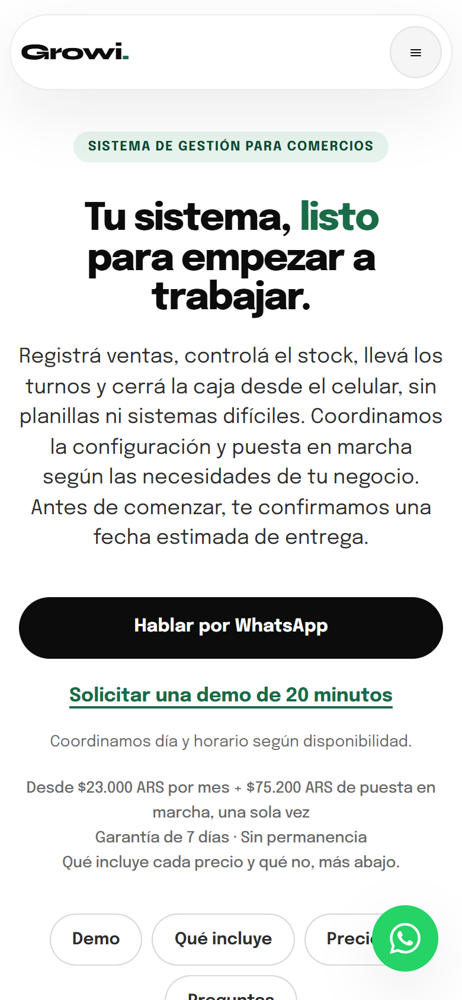
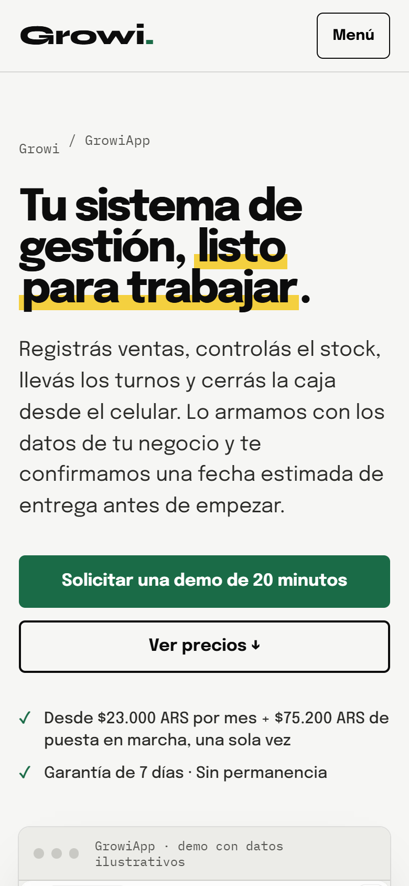
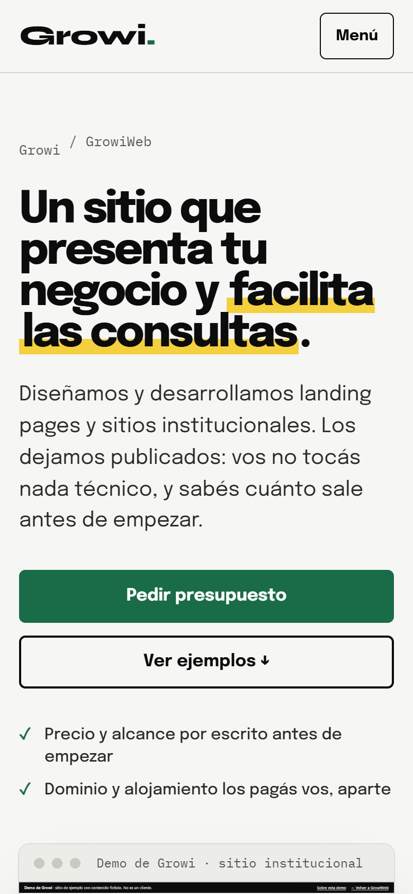

Comparativa
Sitio vigente frente a la candidata
Capturas reales en 1440 y 390 px. Páginas completas: vigente y candidata (home); vigente y candidata (GrowiApp); vigente y candidata (GrowiWeb).


Métricas de estructura
| Página | Palabras | Alto escritorio (px) | Alto móvil (px) | Enlaces a WhatsApp | Elementos de precio |
|---|---|---|---|---|---|
| Home | 875 → 741 (−15%) | 6.579 → 5.437 (−17%) | 9.400 → 8.291 (−12%) | 7 → 7 | 8 → 9 |
| GrowiApp | 1.402 → 820 (−42%) | 8.605 → 5.474 (−36%) | 13.320 → 7.370 (−45%) | 12 → 9 | 9 → 8 |
| GrowiWeb | 1.434 → 949 (−34%) | 9.716 → 6.737 (−31%) | 13.849 → 8.885 (−36%) | 18 → 11 | 18 → 11 |
Palabras: texto renderizado, sin contenido cerrado en acordeones. En GrowiWeb de la candidata, los planes del sitio institucional están en una pestaña y no se cuentan hasta abrirla. Qué se condensó: tablas comparativas que repetían precios, bloques de confianza repetidos, y la demo interactiva de GrowiApp, que pasó a captura con acceso a la demo vigente. Las condiciones comerciales y el aviso L1 se conservan textuales.
Escritorio
Home · primera pantalla


GrowiApp · primera pantalla


GrowiWeb · primera pantalla


Móvil
Home · móvil


GrowiApp · móvil


GrowiWeb · móvil
